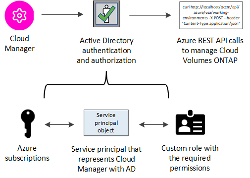

Managing Azure credentials and subscriptions for Cloud Manager
Contributors
 Download PDF of this page
Download PDF of this page
When you create a Cloud Volumes ONTAP system, you need to select the Azure credentials and Marketplace subscription to use with that system. If you manage multiple Azure Marketplace subscriptions, you can assign each one of them to different Azure credentials from the Credentials page.
There are two ways to manage Azure credentials in Cloud Manager. First, if you want to deploy Cloud Volumes ONTAP in different Azure accounts, then you need to provide the required permissions and add the credentials to Cloud Manager. The second way is to associate additional subscriptions with the Azure managed identity.
| When you deploy a Connector from Cloud Manager, Cloud Manager automatically adds the Azure account in which you deployed the Connector. An initial account is not added if you manually installed the Connector software on an existing system. Learn about Azure accounts and permissions. |
Granting Azure permissions using a service principal
Cloud Manager needs permissions to perform actions in Azure. You can grant the required permissions to an Azure account by creating and setting up a service principal in Azure Active Directory and by obtaining the Azure credentials that Cloud Manager needs.
The following image depicts how Cloud Manager obtains permissions to perform operations in Azure. A service principal object, which is tied to one or more Azure subscriptions, represents Cloud Manager in Azure Active Directory and is assigned to a custom role that allows the required permissions.

Creating an Azure Active Directory application
Create an Azure Active Directory (AD) application and service principal that Cloud Manager can use for role-based access control.
You must have the right permissions in Azure to create an Active Directory application and to assign the application to a role. For details, refer to Microsoft Azure Documentation: Required permissions.
-
From the Azure portal, open the Azure Active Directory service.

-
In the menu, click App registrations.
-
Click New registration.
-
Specify details about the application:
-
Name: Enter a name for the application.
-
Account type: Select an account type (any will work with Cloud Manager).
-
Redirect URI: You can leave this field blank.
-
-
Click Register.
You’ve created the AD application and service principal.
Assigning the application to a role
You must bind the service principal to one or more Azure subscriptions and assign it the custom "OnCommand Cloud Manager Operator" role so Cloud Manager has permissions in Azure.
-
Create a custom role:
-
Download the Cloud Manager Azure policy.
-
Modify the JSON file by adding Azure subscription IDs to the assignable scope.
You should add the ID for each Azure subscription from which users will create Cloud Volumes ONTAP systems.
Example
"AssignableScopes": [ "/subscriptions/d333af45-0d07-4154-943d-c25fbzzzzzzz", "/subscriptions/54b91999-b3e6-4599-908e-416e0zzzzzzz", "/subscriptions/398e471c-3b42-4ae7-9b59-ce5bbzzzzzzz" -
Use the JSON file to create a custom role in Azure.
The following example shows how to create a custom role using the Azure CLI 2.0:
az role definition create --role-definition C:\Policy_for_cloud_Manager_Azure_3.8.7.jsonYou should now have a custom role called Cloud Manager Operator.
-
-
Assign the application to the role:
-
From the Azure portal, open the Subscriptions service.
-
Select the subscription.
-
Click Access control (IAM) > Add > Add role assignment.
-
Select the Cloud Manager Operator role.
-
Keep Azure AD user, group, or service principal selected.
-
Search for the name of the application (you can’t find it in the list by scrolling).
Here’s an example:
-
Select the application and click Save.
The service principal for Cloud Manager now has the required Azure permissions for that subscription.
If you want to deploy Cloud Volumes ONTAP from multiple Azure subscriptions, then you must bind the service principal to each of those subscriptions. Cloud Manager enables you to select the subscription that you want to use when deploying Cloud Volumes ONTAP.
-
Adding Windows Azure Service Management API permissions
The service principal must have "Windows Azure Service Management API" permissions.
-
In the Azure Active Directory service, click App registrations and select the application.
-
Click API permissions > Add a permission.
-
Under Microsoft APIs, select Azure Service Management.

-
Click Access Azure Service Management as organization users and then click Add permissions.

Getting the application ID and directory ID
When you add the Azure account to Cloud Manager, you need to provide the application (client) ID and the directory (tenant) ID for the application. Cloud Manager uses the IDs to programmatically sign in.
-
In the Azure Active Directory service, click App registrations and select the application.
-
Copy the Application (client) ID and the Directory (tenant) ID.

Creating a client secret
You need to create a client secret and then provide Cloud Manager with the value of the secret so Cloud Manager can use it to authenticate with Azure AD.
| When you add the account to Cloud Manager, Cloud Manager refers to the client secret as the Application Key. |
-
Open the Azure Active Directory service.
-
Click App registrations and select your application.
-
Click Certificates & secrets > New client secret.
-
Provide a description of the secret and a duration.
-
Click Add.
-
Copy the value of the client secret.

Your service principal is now setup and you should have copied the application (client) ID, the directory (tenant) ID, and the value of the client secret. You need to enter this information in Cloud Manager when you add an Azure account.
Adding Azure credentials to Cloud Manager
After you provide an Azure account with the required permissions, you can add the credentials for that account to Cloud Manager. This enables you to launch Cloud Volumes ONTAP systems in that account.
You need to create a Connector before you can change Cloud Manager settings. Learn how.
-
In the upper right of the Cloud Manager console, click the Settings icon, and select Credentials.

-
Click Add Credentials and select Microsoft Azure.
-
Enter information about the Azure Active Directory service principal that grants the required permissions:
-
Application (client) ID: See Getting the application ID and directory ID.
-
Directory (tenant) ID: See Getting the application ID and directory ID.
-
Client Secret: See Creating a client secret.
-
-
Confirm that the policy requirements have been met and then click Continue.
-
Choose the pay-as-you-go subscription that you want to associate with the credentials, or click Add Subscription if you don’t have one yet.
To create a pay-as-you-go Cloud Volumes ONTAP system, Azure credentials must be associated with a subscription to Cloud Volumes ONTAP from the Azure Marketplace.
-
Click Add.
You can now switch to different set of credentials from the Details and Credentials page when creating a new working environment:

Associating an Azure Marketplace subscription to credentials
After you add your Azure credentials to Cloud Manager, you can associate an Azure Marketplace subscription to those credentials. The subscription enables you to create a pay-as-you-go Cloud Volumes ONTAP system, and to use other NetApp cloud services.
There are two scenarios in which you might associate an Azure Marketplace subscription after you’ve already added the credentials to Cloud Manager:
-
You didn’t associate a subscription when you initially added the credentials to Cloud Manager.
-
You want to replace an existing Azure Marketplace subscription with a new subscription.
You need to create a Connector before you can change Cloud Manager settings. Learn how.
-
In the upper right of the Cloud Manager console, click the Settings icon, and select Credentials.
-
Hover over a set of credentials and click the action menu.
-
From the menu, click Associate Subscription.
-
Select a subscription from the down-down list or click Add Subscription and follow the steps to create a new subscription.
The following video starts from the context of the working environment wizard, but shows you the same workflow after you click Add Subscription:
Associating additional Azure subscriptions with a managed identity
Cloud Manager enables you to choose the Azure credentials and Azure subscription in which you want to deploy Cloud Volumes ONTAP. You can’t select a different Azure subscription for the managed identity profile unless you associate the managed identity with those subscriptions.
A managed identity is the initial Azure account when you deploy a Connector from Cloud Manager. When you deployed the Connector, Cloud Manager created the Cloud Manager Operator role and assigned it to the Connector virtual machine.
-
Log in to the Azure portal.
-
Open the Subscriptions service and then select the subscription in which you want to deploy Cloud Volumes ONTAP.
-
Click Access control (IAM).
-
Click Add > Add role assignment and then add the permissions:
-
Select the Cloud Manager Operator role.
Cloud Manager Operator is the default name provided in the Cloud Manager policy. If you chose a different name for the role, then select that name instead. -
Assign access to a Virtual Machine.
-
Select the subscription in which the Connector virtual machine was created.
-
Select the Connector virtual machine.
-
Click Save.
-
-
-
Repeat these steps for additional subscriptions.
When you create a new working environment, you should now have the ability to select from multiple Azure subscriptions for the managed identity profile.

 Edit on GitHub
Edit on GitHub